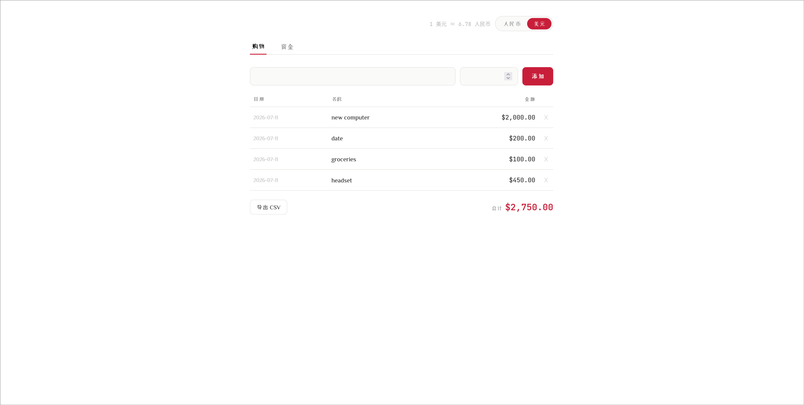

a lightweight, local-first and typography-oriented note manager built with vanilla javascript
i created mdnote because i wanted a simple notes application that was fast and organized wihtout the complexity of more mainstream or larger tools.
unlike cloud-based apps, mdnote stores everything locally within the browser via IndexedDB, which keeps notes private yet instantly accessible.
### highlights
- hierarchical treemap organization
- view all notes in a visual tree structure and create infinitely nested pages through root and branch page creation.
- flexible exports
- supports:
-JSON for backups and reovery; which also simplifies moving notes across web browsers or devices
- PDF and TXT
- exporting root pages will also export all child pages, but exporting a single branch page will not export the root or any of its children.
- keyboard-first workflow
- includes hotkey for more efficient navigation and editing.
- local first storage
- no accounts, servers, or cloud storage required. all notes stay on the user's browser.
### built with
- html
- css
- vanilla javascript
- IndexedDB
### links
[🔗 Live Demo](https://liangnb07.github.io/mdnote) · [📂 Github Repository](https://github.com/liangnb07/mdnote)
nomi 记账本

an intentionally simple budgeting tool designed to help users make better spending decisions by connecting their wishlist with their current financial situation.
the idea behind nomi came from wanting a simple way to keep track of things I wanted to buy while also considering whether I could actually afford them. what seperates nomi is that instead of only recording spending after it happens, nomi focuses on planning purchases with awareness of available funds, income, and debt.
the name "nomi" comes from a wordplay on "money": swapping the positions of the letters "m" and "n" to create a unique name with personality.
### features
- shopping wishlist
- track items you want to buy or are considering purchasing.
- financial tracking
- manage your current funds, income, and debt to understand your available budget.
- currency switching
- switch between RMB (¥) and USD ($).
- dual-tab interface
- separate shopping plans and financial information into dedicated sections.
### built with
- HTML
- CSS
- JavaScript
### links
[🔗 Live Demo](https://liangnb07.github.io/nomi) · [📂 GitHub Repository](https://github.com/liangnb07/nomi)